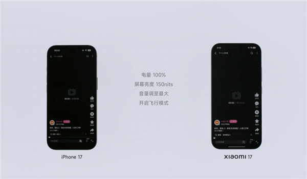

Minokakay
@Minokakay
@LuvLetter_moe 不要信小米公司的任何宣传，我买电饭煲的时候小米的人跟我说这个内胆涂层五年都不会掉，但实际上半年就开始掉，现在给我换了三个内胆了，我把他们售后缠上了，我说除非这个电饭煲机器坏了，五年内你得一直给我免费换内胆，坏了就换。自从这以后就再也没买过小米的产品。

Luv Letter
@LuvLetter_moe
小米当初这个外放续航测试挺不要脸的, 说是控制变量, 实际上偷偷塞了最大音量 100% 这条; 要知道安卓这边扬声器规格/Audio PMIC阉的都很厉害, 高音量下的 DRC (动态压缩)都极为严重, 输出的声压级和动态都被 iPhone 吊打(我手头 iPhone 17/小米17Pro对比非常明显), 像DRC本身是为了减轻破音, https://t.co/jZI9Aodiv1